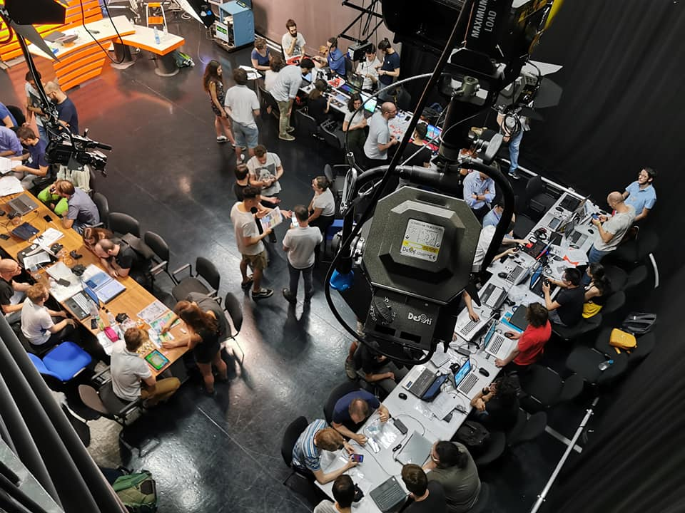

Beat! This Game
A rythm game develop at Polimi Game Collective
Brief: define a game concept and develop a playable prototype of it in a six months period
Summary
The challenge For the Videogame Design and Programming course at Politecnico di Milano, four colleagues and I had to develop a game from scratch. During four months, we set a concept and iterated on the project to refine the gameplay.
The solution We tested the final prototype in different environments and with different kinds of people. The game was well perceived and a great number of people enjoyed playing it.
Process
The design process was iterative, to create payable prototypes as fast as possible to test them as soon as possible. In this way, we found falls early in the development.
We created a Game Design Document to document all our decisions and to develop a coherent product.
Art direction
I was in charge of developing the whole art of the game. The team set the mood of the game together, gathering references and designing a mood board.
After the idea was defined, I started producing sketches looking for the right feeling. I presented those ideas to my colleagues and once we agreed on one, I began 3D-modelling the asset and then animating it. Finally, I also products 2D assets of the game.

Playtests
The game was tested three times: once with course colleagues, once at the Global Game Jam hosted at Politecnico di Milano and one at the NGD 2019, an event hosted by Università Statale di Milano to the presence of many companies in the gaming industry.
Thanks to the iterations on the project, we always gathered better feedback from players. Our game was even rated as one of the best at the NGD event.
Developed with:
Alejandra Imaz,
Piotr Kozak,
Martina Lauricella,
Giacomo Vannucci